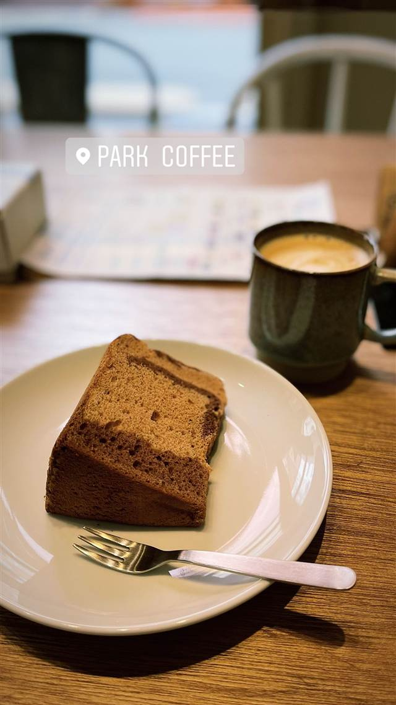

中華そば 永楽
創業から食器も味も変わらぬ、70年続く町中華のもやしそば
永楽そば店
1956年創業、約70年続く大井町の老舗町中華。創業当初からの味と食器を守り継ぎ、もやしそばや餃子、ドーム型のしっとりチャーハンが名物。昭和の雰囲気を色濃く残す東小路飲食店街に店を構える。
TRIVIA
豆知識
- 創業時から同じ食器を使い続けている
- 名物の中華そばより餃子の方が美味しいという声もある
REVIEWS
世間の評判
3.68食べログ
焦がしネギのワンタン麺の評判
- 焦がしネギの香ばしさとつるっとしたワンタンの食感を評価する声が多い
- 行列ができるほどの人気だが回転が早く待ち時間は短めという声もある
食べログ 口コミ2843件
| 創業 | 1956年創業（約70年） |
|---|---|
| 看板 | もやしそば、餃子、ドーム型のしっとりチャーハン |
| こだわり | 創業当初からほぼ変わらぬ味を守り、開業時から使い続けている食器をいまも使用している |
| どこから | 23区の外れ・近郊 |
| 行くなら | 行列 |
| 営業時間 | 月 休み 火〜金 11:30-22:00 土・日 11:30-21:00 |
| 予算 | 昼 ¥1,000～¥1,999 夜 ¥1,000～¥1,999 |
| 場所 | 大井町 東京都品川区東大井5-3-2 |
| メモ | 昭和の面影が残る東小路飲食店街にある老舗町中華、外国人観光客も撮影に訪れる |
食べたもの：餃子・炒飯
NEARBY
近い店・同じ系統の店
-
 ★
二郎系(インスパイア) 大井町
ザ・ラーメン スモールアックス
二郎系なのに麺量250gと少なめで食べやすい一杯
昼 ～¥999 夜 ～¥999
★
二郎系(インスパイア) 大井町
ザ・ラーメン スモールアックス
二郎系なのに麺量250gと少なめで食べやすい一杯
昼 ～¥999 夜 ～¥999
-
 ★
二郎系(インスパイア) 大井町
のスた 凛本店
目黒二郎とさぶちゃんの技を融合し独自の一杯を確立した元祖の店
昼 ¥1,000～¥1,999 夜 ¥1,000～¥1,999
★
二郎系(インスパイア) 大井町
のスた 凛本店
目黒二郎とさぶちゃんの技を融合し独自の一杯を確立した元祖の店
昼 ¥1,000～¥1,999 夜 ¥1,000～¥1,999
-

コーヒー 大井町 PARK COFFEE 東急の廃車両や旧駅の廃材を再利用した公園のようなコーヒースタンド 昼 ～¥999 夜 ～¥999 -
 そば 乃木坂駅
おそばの甲賀
赤坂砂場で14年修行した店主が営む、ミシュラン掲載の石臼挽きそば
昼 ¥2,000～¥2,999 夜 ¥6,000～¥7,999
そば 乃木坂駅
おそばの甲賀
赤坂砂場で14年修行した店主が営む、ミシュラン掲載の石臼挽きそば
昼 ¥2,000～¥2,999 夜 ¥6,000～¥7,999
-
 そば 原宿・明治神宮前
竹ノ下そば
10日以上寝かせて甘みを引き出す、長野の在来種使用の田舎蕎麦
昼 ¥5,000～¥5,999 夜 ¥20,000～¥29,999
そば 原宿・明治神宮前
竹ノ下そば
10日以上寝かせて甘みを引き出す、長野の在来種使用の田舎蕎麦
昼 ¥5,000～¥5,999 夜 ¥20,000～¥29,999
-
 そば 根津駅
手打ちそば 根津 鷹匠
食べログ蕎麦百名店、二八と田舎「深山」の食べ比べ二色ざる
昼 ¥1,000～¥1,999 夜 ¥2,000～¥2,999
そば 根津駅
手打ちそば 根津 鷹匠
食べログ蕎麦百名店、二八と田舎「深山」の食べ比べ二色ざる
昼 ¥1,000～¥1,999 夜 ¥2,000～¥2,999